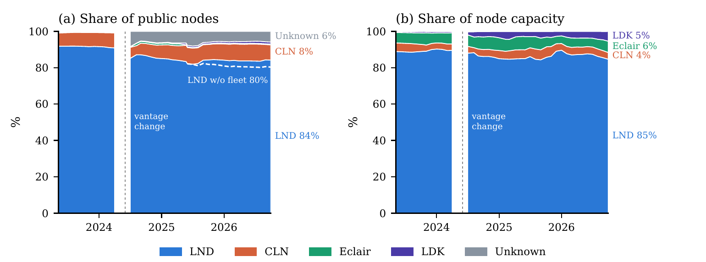

Does Client Diversity Protect the Lightning Network?Evidence from the 2026 Core Lightning Shutdown
The damage from a software failure depends on whether it reaches the network's hubs, not on how many nodes run the failing software.
LND runs 80% of public Lightning nodes and 84% of public channel capacity. When Core Lightning's maintainers told operators who could not upgrade to disconnect on 26 August 2026, 22% of its nodes went dark overnight, yet reachability across the network fell by 7.8 percentage points, half the drop during a Tor denial-of-service wave that July. Diversity statistics that count nodes mislead; the number to track is which software the hubs run.
84%of public channel capacity runs on one implementation, LND
22%of Core Lightning nodes went dark overnight, ten times the usual rate
4×more reachability lost if ACINQ's Eclair node fails alone than if all 619 routable CLN nodes do
@misc{kumar2026clientdiversity,
title = {Does Client Diversity Protect the Lightning Network? Evidence from the 2026 Core Lightning Shutdown},
author = {Saurabh Kumar},
year = {2026},
eprint = {2610.20952},
archivePrefix = {arXiv},
primaryClass = {cs.CR},
doi = {10.48550/arXiv.2610.20952},
url = {https://arxiv.org/abs/2610.20952}
}
